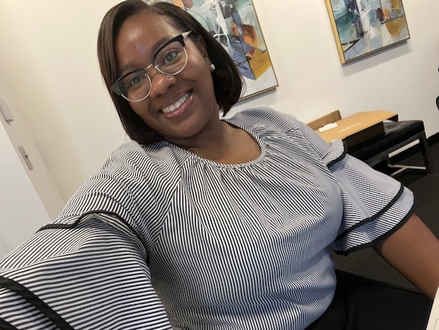

About Me

I was born and raised in Atlanta, Georgia, a child of the 90s. Some of my interests include ffashion, yoga, planting, traveling, vlogging, exploring music and new food. I have two older brothers and two younger sisters, and I share my home with a cat named Smokey. I love the idea of romanticizing daily life.
What drew me to a career in technology was the desire for work-life balance. Being independent afforded me the opportunity to work in different environments while pursuing my degree. This became a pivotal moment because my interests shifted while working through school.
In light of my journey and the systemic challenges I've faced, I wholeheartedly advocate for the implementation of mentorship and support programs within the technology sector. These initiatives have been instrumental in my own growth and resilience, providing me with guidance and encouragement during times of uncertainty. Furthermore, I strongly recommend the expansion of workplace diversity and inclusion initiatives to foster environments where individuals from all backgrounds feel valued and empowered to succeed.
Additionally, I urge the establishment or enhancement of financial assistance programs for students experiencing financial hardships, as such support was pivotal in enabling me to continue my education despite significant obstacles. Moreover, promoting educational equity and access is paramount to ensuring that all aspiring technologists have the opportunity to pursue their passions and contribute to the field. Lastly, fostering awareness and advocacy initiatives to address systemic inequities is essential for creating a more inclusive and equitable technology industry where individuals, regardless of race or gender, can thrive and make meaningful contributions. This is why I am pursuing my degree in IT at KSU.